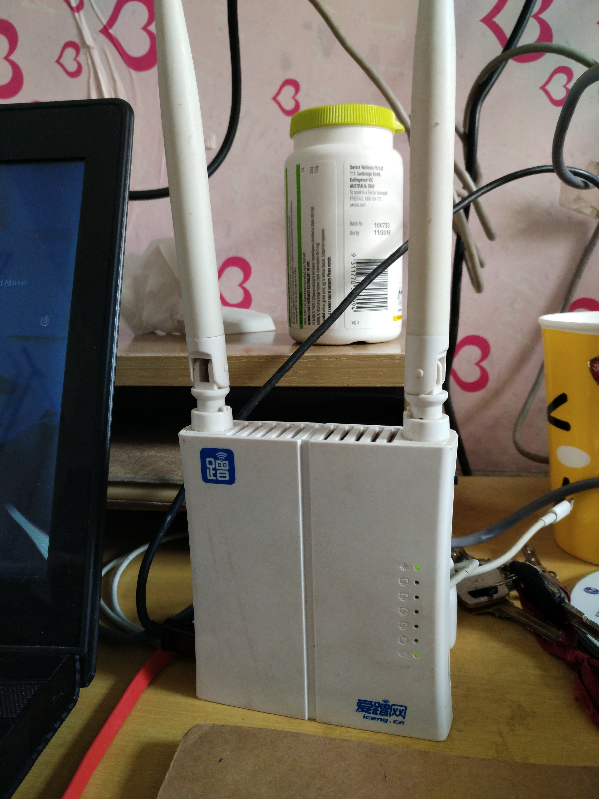
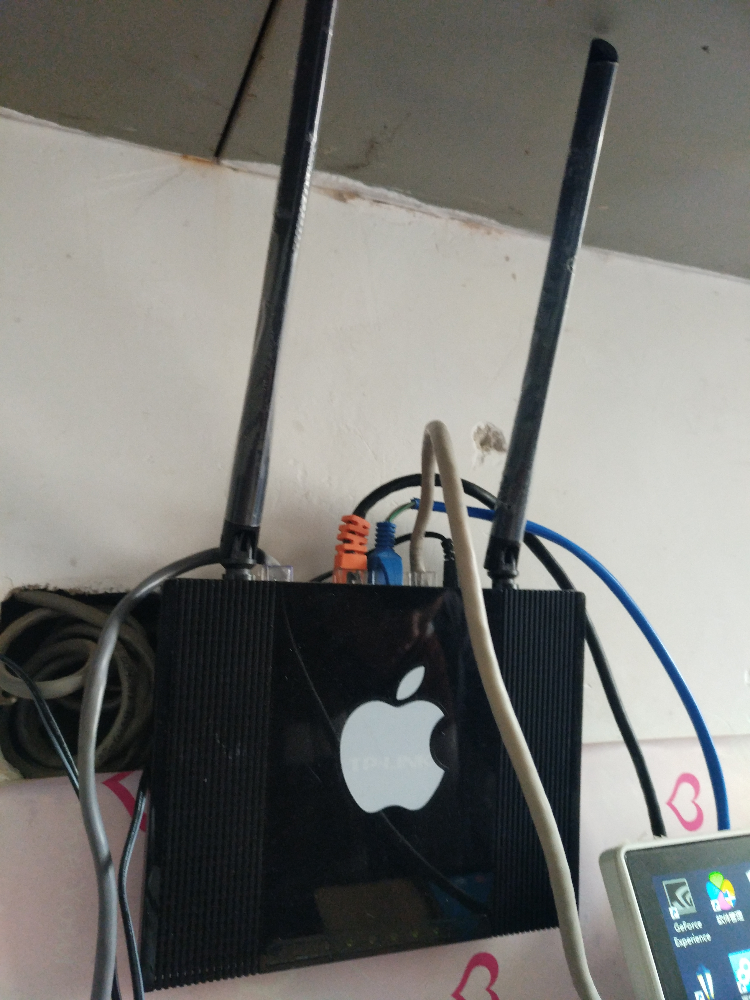
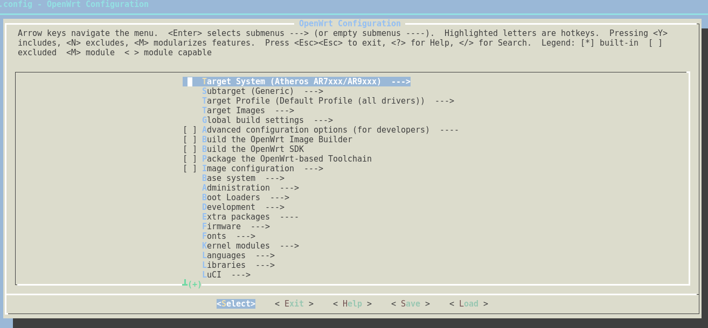
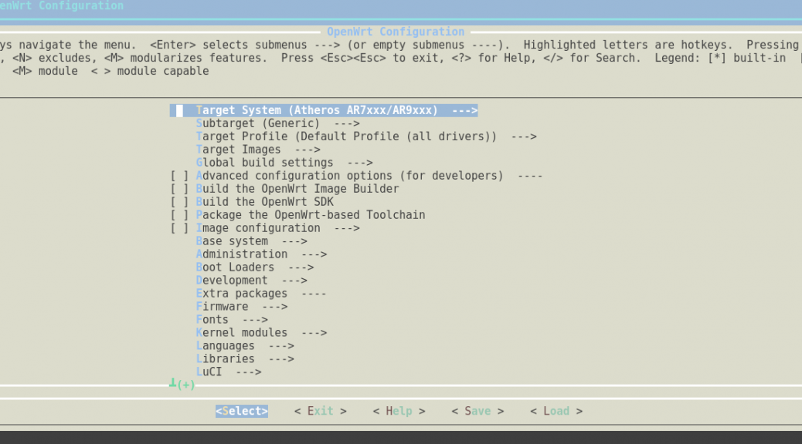
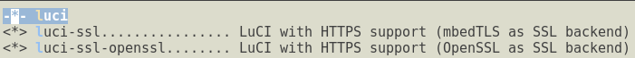
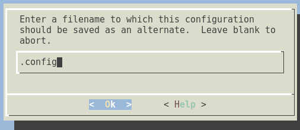
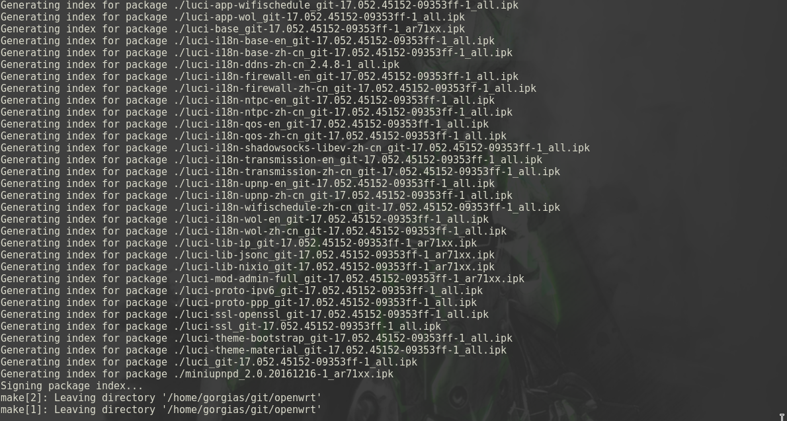
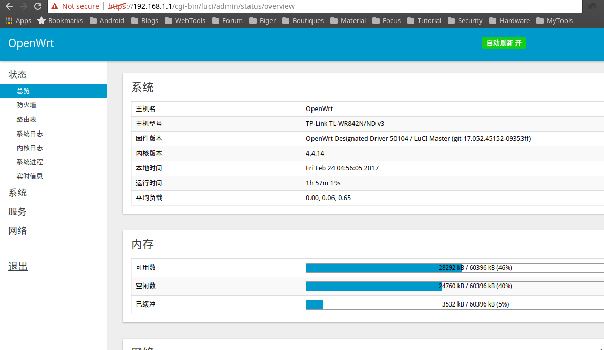

前言
 最近学校的移动宽带运营商开始搞事情，搞流量劫持，下载投毒，步入电信联通之流。这个学期也不能多拨了，会被系统检测到，封停半个小时。 去年夏天乔治学长送我的路由器，OYE-0001，用了半年多了，软件上挺稳定的，就是接口太松，不小心碰到会掉线。  之前改装的TP-Link WR845N刷Hackpascal的固件会定期宕机，因为不能多拨了，所以打算换回原来的路由器刷官方固件稳定一点，反正不在寝室住了，对于流控也没有要求。 但是官方似乎放弃了WR845N V4版本，已经下载不到固件了，其他版本固件刷入后不能开机。 于是打算自己尝试编译，踩了不少坑呢。 记录下步骤吧！
准备
先参考openwrt github 准备好编译环境，需要以下组件
gcc, binutils, bzip2, flex, python, perl, make,
find, grep, diff, unzip, gawk, getopt, subversion, libz-dev and libc headers
系统环境
- OS: Arch Linux
- Kernel: x86_64 Linux 4.9.8-1-ARCH
直接用trunk版本
git clone https://github.com/openwrt/openwrt
运行feeds获取所有的预定义软件包并且安装，关于feeds参考
./scripts/feeds update -a
./scripts/feeds install -a
编译
开始配置编译菜单
make menuconfig
方向建上下操作纵列，左右操作横列，空格选择，M代表作为模块编译，*代表编译到固件。  因为是八脚SPI Flash，Subtarget选择Generic，参考The OpenWrt Flash Layout
Target Profile 选择 TP-LINK TL-WR842N/ND，因为硬件相似，都是QCA953X的。 Target Images 选择 squashfs，参考SquashFS 其他保持默认，因为容量不够，所以其他组件就不装了，接下来到LuCI Collections，选默认的 
Modules ---> Translations
选择中文和英文
Applications这里选择需要的应用，参考PandoraBox固件的应用。
Themes里面选最漂亮的luci-theme-material

接下来保存，名字一定要为.config，不能改

接下来开始编译，因为CPU是双核双线程，所以加上-j4，然后加上V=99可以看到详细信息。
make -j4 V=99
编译时需要连接网络下载软件包，部分地区网络不可达，请使用代理。 因为网络问题编译失败，请清理，然后使用proxychains4代理安装
make clean
pc4 make -j4 V=99
编译完成后，会在./bin/ar71xx/目录生成固件和软件包，找到相应固件，进breed刷入即可。

开机成功，发现在卫生间信号都是满格

附上固件下载地址 Mega